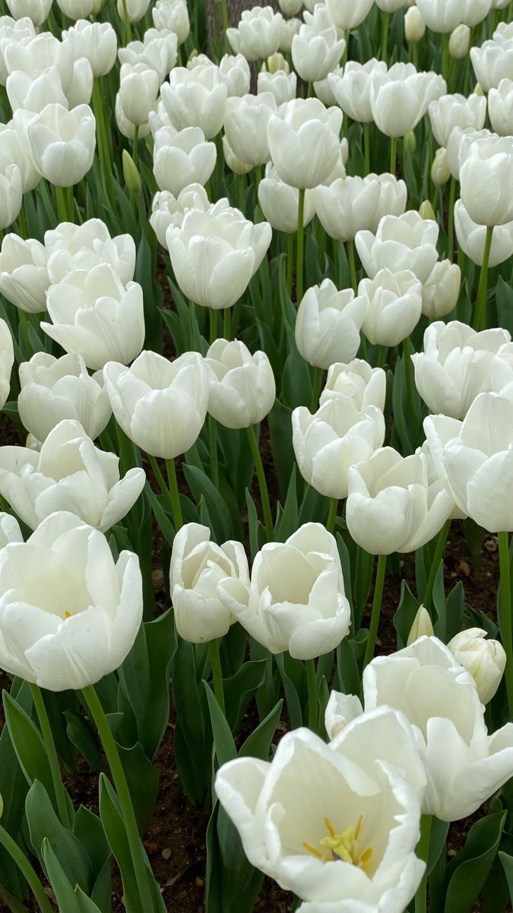
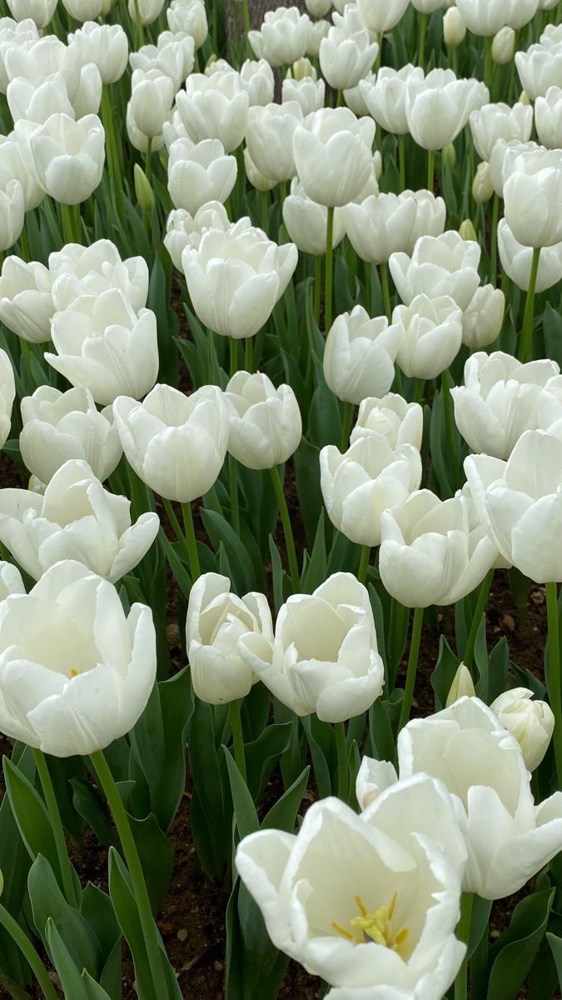

الورد
الورد أو الجل هو جنس نباتي يتبع فصيلة الوردية من رتبة الورديات. تتكون الوردة من مجموعة وريقات متراصة ومتصلة في أسفلها بساق تحتوي في الغالب على أشواك. معظم أنواع الورد قدمت في الأصل من آسيا
متى اكتشفت الورود ؟
تعد الورود من رتبة الورديات حيث يعود تاريخها ما قبل 5000 عام على الأقل
أنواع الورود
ومنها : الورد الجوري ، والورد البنفسج ، ورد الروز
اهمية الورد في حياتنا
تستخدم لإخفاء آثار الجروح، والندب الناتجة عن الإصابة بحب الشباب، والعمليات الجراحية. كما يحتوي الورد على مواد متعددة مضادة للاكتئاب
 
